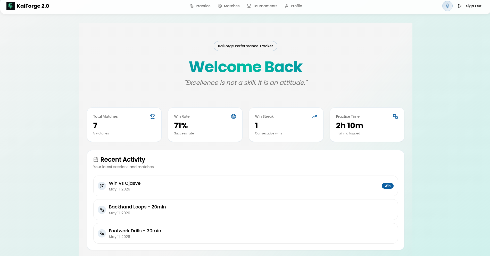

KaiForge
KaiForge helps table tennis players understand their game better by turning practice sessions, match performances, and tournament records into meaningful insights for their improvement.
The Idea
KaiForge bridges the gap between intuition and raw performance data. Players can enter their practice, match, and tournament records, which are then tran-sformed into detailed graphs and visual insights that help analyze progress at its core.
Core Functionality
KaiForge is more than just a tracking app — it's a long-term performance companion for table tennis players. With secure login and personalized data storage, players can monitor their growth over time through detailed analysis of practice sessions, matches, and tournaments. From league-cum-knockout tournament structures to everyday practice matches, KaiForge transforms every session into meaningful visual insights that help players improve with clarity and precision.
The Complete Tech Stack
React + Vite: Used to build a fast, responsive, and modern user interface with lightning-fast development and optimized performance.
TypeScript: Adds scalability and type safety, making the application more reliable, maintainable, and production-ready.
Tailwind CSS: Powers the futuristic glassmorphism-inspired UI with responsive and utility-first styling.
Supabase: Handles secure authentication, cloud synchronization, and real-time database management for player records and analytics.
PostgreSQL: Stores practice sessions, match history, tournament records, and long-term player performance data efficiently.
Analytics Engine: Transforms raw practice and tournament data into meaningful graphs, charts, and visual performance insights.
Application Preview


